-
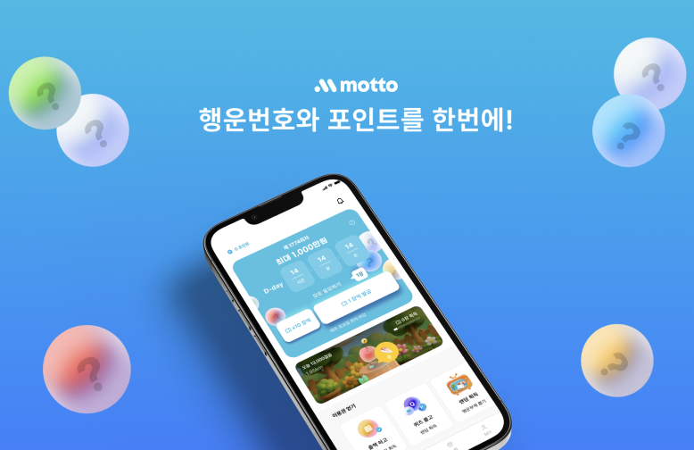회사 주식회사 엠*** 직급 연구개발팀 팀장
정보 상용완료, 마케팅X(미출시화), 폴더블 지원, 하이브리드, flutter
팀원 flutter 개발1, 서버1, 운영1, 본인 (총 4명)
프로젝트 진행기간 3개월
담당 PM,UX/UI,서비스 기획,웹프론트
디자인 툴 figma, lottielab, flow
About
앱테크 서비스로써 입사 후 3개월 짜리 프로젝트를 PM, 서비스기획, UX/UI, 웹프론트 담당하여 진행하였습니다. 우선 기존의 있던 서비스 플로우 점검을 하고 방향성 회의를 진행했습니다. 방향성 검토 후 토대로 와이어프레임 및 서비스기획을 진행하여 일정산출과 함께 기획 디테일 작업에 들어갔습니다.
1Step 방향성 체크 및 서비스파악,리서치2Step 서비스기획, 일정산출 및 배정3Step 작업 진행 및 QA목적 기존 UX 재정의 및 리뉴얼
목표 기존 서비스 UX개선, 기간 3개월, 출시 상태완료화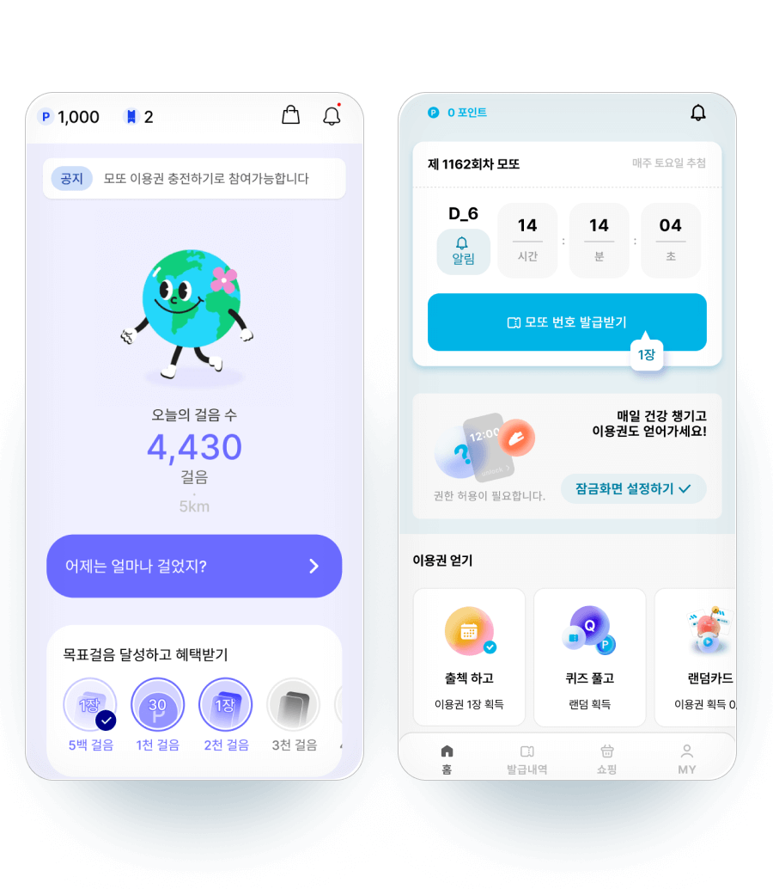(좌 기존, 우 리뉴얼)
초기 서비스 파악을 했을때 각 페이지들이 웹인 경우와 메인, 내역, 설정등 일관화되어 있지 않은 형태가 되어 있어 일광성을 염두해두고 디자인 시스템 토대 작업에 들어갔습니다.
리서치
프로젝트 진행전 원할한 협업 및 경쟁사 리서치를 함께 진행했습니다. 각자 주사용층, 특지이 다른 앱테크 서비스를 1개 선정하고 해당 서비스를 사용해보며 리서치한 내용을 함께 나누며 의논하는 시간을 가졌습니다. 해당 회의를 통해 함께 하는 프로젝트가 나아가고자 하는 방향성과 목표를 같이 맞추고, 차별성이나 자체제품 특징에 대한 고민을 함께 나누었습니다.
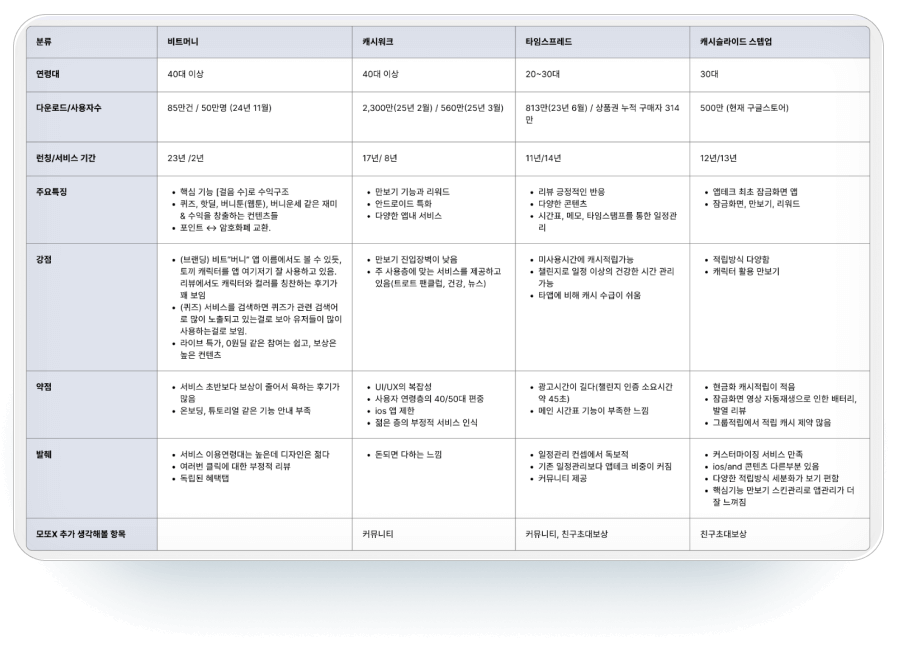경쟁사 리서치
전체 프로젝트 계획
회사에서 따로 프로젝트 관리툴을 쓰고 있지 않아. 노션 칸반 시스템을 사용하여 백로그, 작업, QA, 완료, 상용출시 상태로 분류하고 스프린트방식으로 주단위 작업을 진행했습니다. 금요일에 간단한 회고 밑 월요일 업무를 선정하고 어느정도 진행된 후에는 출시 업데이트 여부 항목을 포함하여 바로 반영되도록 했습니다. 운영 담당자는 앱서비스가 상용은 되어 있으나 마케팅을 하지 않아 사용자가 없음으로 저와 함께 리서치를 진행하고 QA작업을 진행하였으며, 향후에 운영시에 작업이 원할할 수 있도록 푸시관리 및 전략을 사전에 의논하여 진행하였습니다. 모든 회의 작업방식은 제가 먼저 서비스 기획을 하고 기획을 토대로 팀원들과 의논 및 도출 후 사업적으로 중요한 포인트가 되는부분만 대표님과 상의하여 재검토를 거치고 진행하는 방식으로 하였습니다.
작업관리 노션 사용(칸반)작업주기 주간 스프린트 방식회의주기 최소 주1회로 실행
서비스 플로우
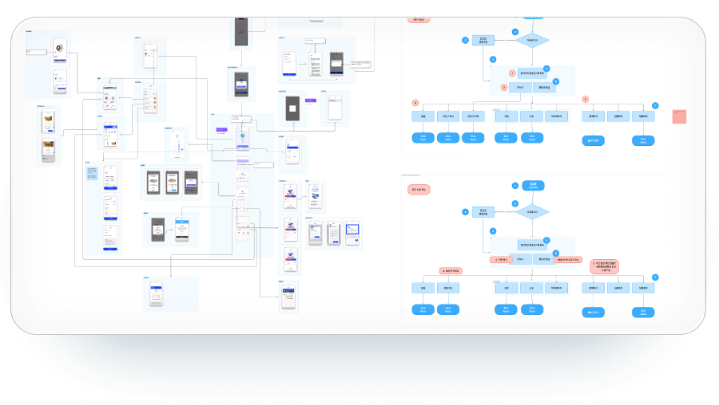초기 사용자, 기존사용자 플로우
전체 서비스 현황을 파악/팀원 공유 하기 위해 모든 페이지(서비스 홈페이지 포함)를 나열하고 초안 계획을 세웠습니다. 서비스 플로우와 초기 사용자 진입플로우, 기존사용자 진입 예측 플로우를 작성하여 문제점을 파악했습니다.
초기 사용자 경험 개선
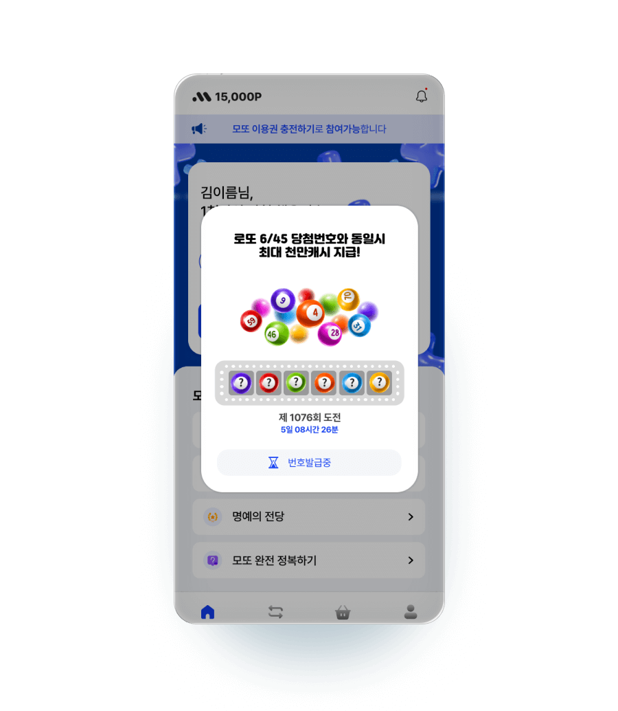기존 번호추첨 화면
기존 초기 사용자의 플로우 흐름이 끊긴다는 점을 문제로 정의하고 초기 사용자가 앱을 설치 및 초기 진행때 해당 서비스의 흐름을 경험하고 락인될수 있도록 구조를 변경하였습니다.

리뉴얼, 프로토타입 제작으로 사전 점검
메인화면 시안작업
중간 점검/회의 도중 대표님 요청으로 메인화면 시안 작업을 추가적으로 진행했습니다. 초기 디자인 목적은 최대한 베이직한 형태로 초기출시 형태를 제작하고 출시/운영을 하며 주 타겟층에 맞춰서 반영하고자 함이였으나, 해당부분 요청을 받아 시안작업을 하고 전직원 투표 피드백을 통해 최종반영되었습니다.
중간점검 메인화면 시안 작업
목적 메인화면 선정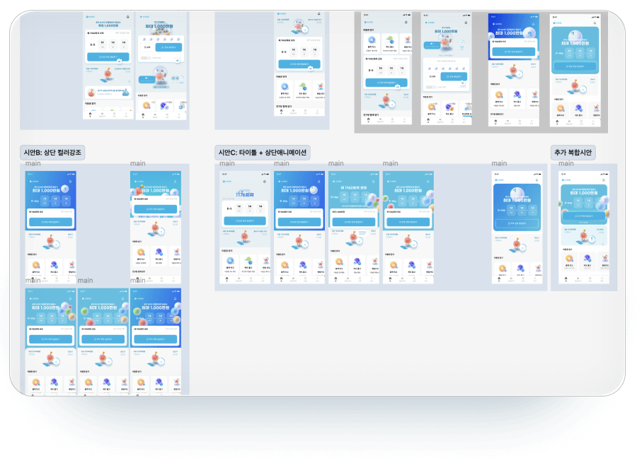메인 시안 및 선정
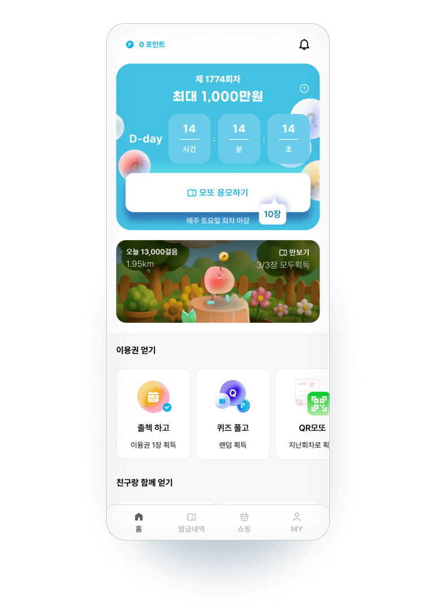최종 시안
디자인 시스템
모든 UI는 컴포넌트화하여 사용했으며, 컬러와 그래픽 이펙트등을 정의하여 진행했습니다. 기존 레거시가 있는 상태였음으로 기존 컬러와 값들을 매치하는것이 어려워 화면단위로 개발자와 협의하여 진행하였습니다.
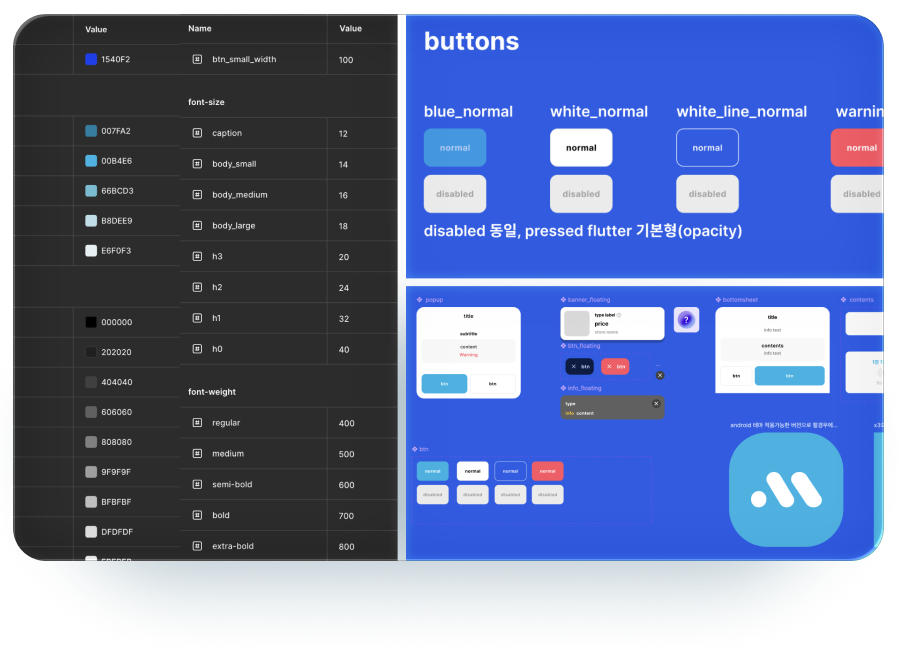디자인 시스템 정의와 컴포넌트 일부
추가 수익 구조
기존 출석체크가 앱 진입시 이용권 1개를 주는 형태였었는데, 사용경험과 바로 행동으로 이어지지 않는 문제가 있어. 우선적으로 발급을 받자마자 바로 사용할수 있는 플로우로 변경하였으며, 출석체크 서비스를 좀 더 확장하여 미출석 날을 광고보기를 통해 충원할수 있도록 변경, 모든 주간 출석에는 포인트를 지급하여 락인되도록 추가 확장하였습니다. 포인트는 광고수익을 계산하여 도출하였습니다.
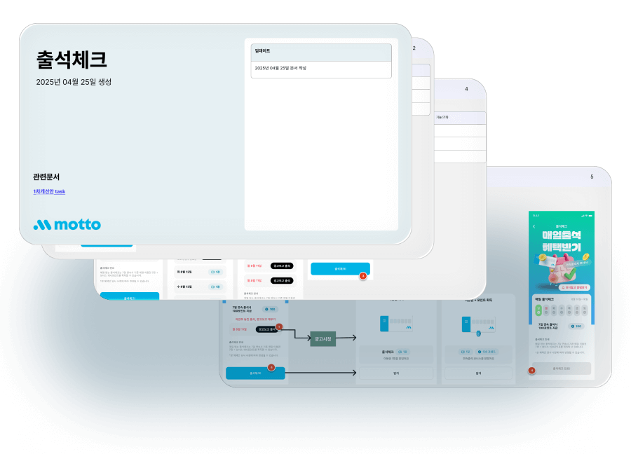기획서/p>
이벤트 추가 서비스 기획
추가적으로 리텐션 및 바이럴을 목적으로 이벤트 서비스를 기획했습니다. 랜덤획득 페이지를 제공하고, 1일 1회이상을 원할시 공유를 통해 재기회를 얻는 형태였습니다. 이때쯤 서버개발자가 다른 업무에 혼선이 생기면서 해당 서비스부분에서 바이럴을 제외하고 우선적으로 광고를 보고 기회를 한번더 얻는 형태로 초기작업을 마쳤습니다.
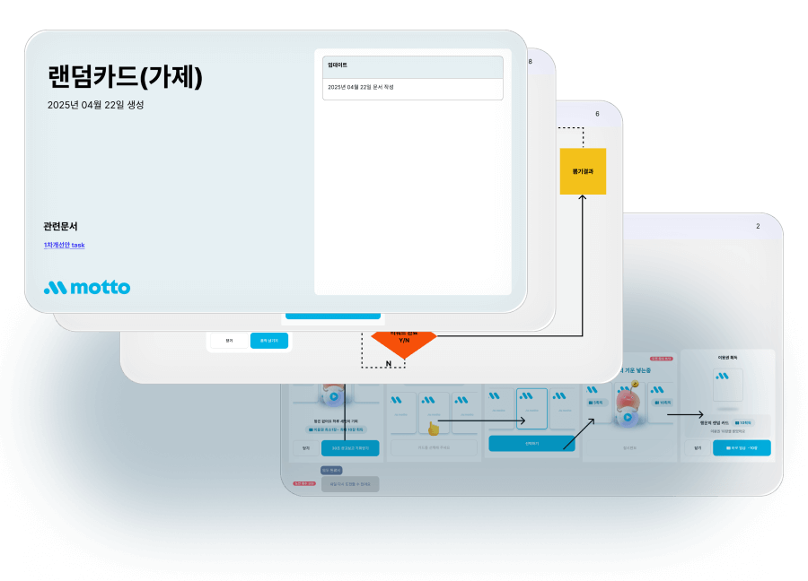
용어정의
기존 버튼 명칭과 서비스명칭이 일치하지 않는 부분이 있어 프로젝트 초반 우선적으로 용어정리를 진행하였습니다.
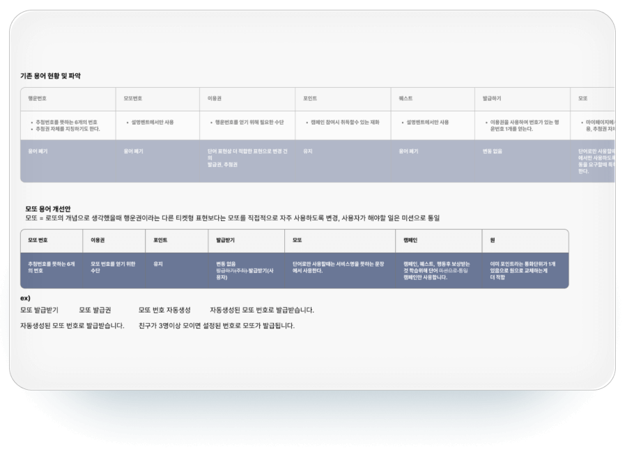용어정의표
Web부분 리뉴얼
일부 웹페이지로 제작된 부분이 있어 해당부분은 제가 리터치 및 일부 서비스 수정하여 진행하였습니다. 초기부터 3개월 프로젝트를 목표로 하고 진행했기 때문에 해당 작업영역에 있어 일정산출을 하며 진행가능한 영역으로 리밋을 걸고 기획했습니다.
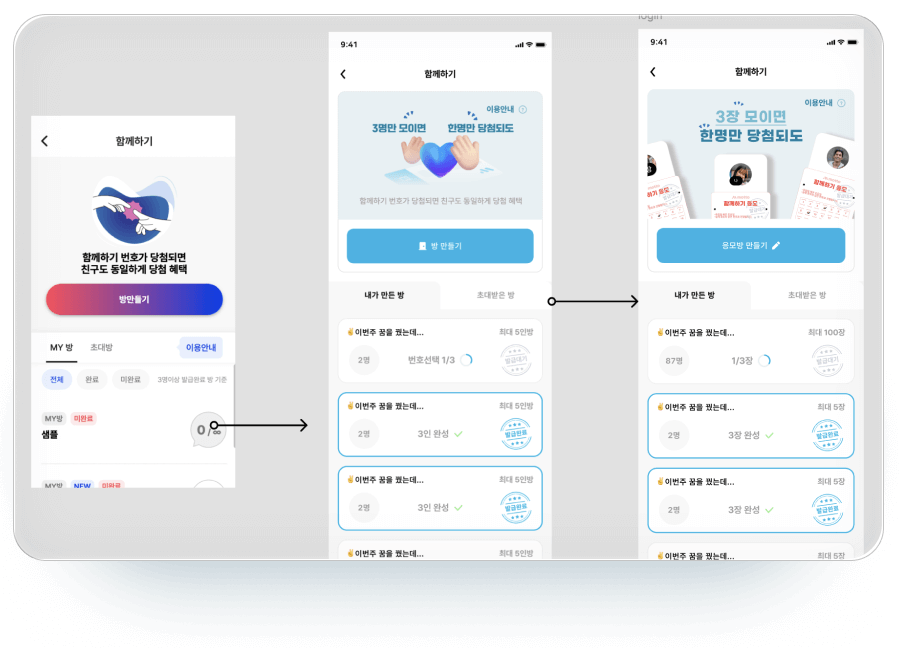최좌측 기존/ 우측 시안1,2 [2번으로 퍼블리싱 반영]


- 앱테크 서비스
- 2025